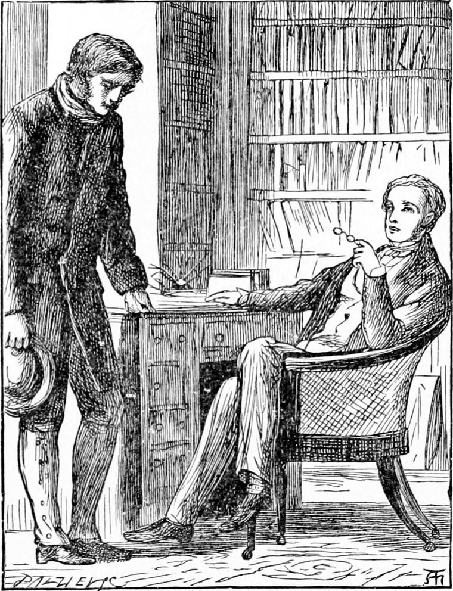
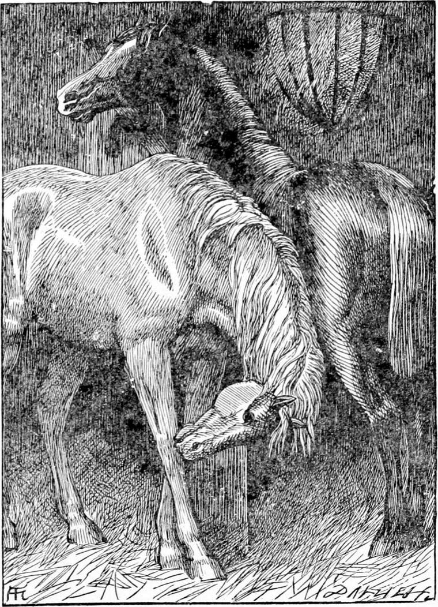

THE children were delighted with the story, and made many amusing remarks upon it. Mr. Raymond promised to search his brain for another, and when he had found one to bring it to them. Diamond having taken leave of Nanny, and promised to go and see her again soon, went away with him.
Now Mr. Raymond had been turning over in his mind what he could do both for Diamond and for Nanny. He had therefore made some acquaintance with Diamond's father, and had been greatly pleased with him. But he had come to the resolution, before he did anything so good as he would like to do for them, to put them all to a certain test. So as they walked away together, he began to talk with Diamond as follows:—
“Nanny must leave the hospital soon, Diamond.”
“I'm glad of that, sir.”
“Why? Don't you think it's a nice place?”
“Yes, very. But it's better to be well and doing something, you know, even if it's not quite so comfortable.”
“But they can't keep Nanny so long as they would like. They can't keep her till she's quite strong. There are always so many sick children they want to take in and make better. And the question is, What will she do when they send her out again?”
“That's just what I can't tell, though I've been thinking of it over and over, sir. Her crossing was taken long ago, and I couldn't bear to see Nanny fighting for it, especially with such a poor fellow as has taken it. He's quite lame, sir.”
“She doesn't look much like fighting, now, does she, Diamond?”
“No, sir. She looks too like an angel. Angels don't fight—do they, sir?”
“Not to get things for themselves, at least,” said Mr. Raymond.
“Besides,” added Diamond, “I don't quite see that she would have any better right to the crossing than the boy who has got it. Nobody gave it to her; she only took it. And now he has taken it.”
“If she were to sweep a crossing—soon at least—after the illness she has had, she would be laid up again the very first wet day,” said Mr. Raymond.
“And there's hardly any money to be got except on the wet days,” remarked Diamond reflectively. “Is there nothing else she could do, sir?”
“Not without being taught, I'm afraid.”
“Well, couldn't somebody teach her something?”
“Couldn't you teach her, Diamond?”
“I don't know anything myself, sir. I could teach her to dress the baby; but nobody would give her anything for doing things like that: they are so easy. There wouldn't be much good in teaching her to drive a cab, for where would she get the cab to drive? There ain't fathers and old Diamonds everywhere. At least poor Nanny can't find any of them, I doubt.”
“Perhaps if she were taught to be nice and clean, and only speak gentle words.”
“Mother could teach her that,” interrupted Diamond.
“And to dress babies, and feed them, and take care of them,” Mr. Raymond proceeded, “she might get a place as a nurse somewhere, you know. People do give money for that.”
“Then I'll ask mother,” said Diamond.
“But you'll have to give her her food then; and your father, not being strong, has enough to do already without that.”
“But here's me,” said Diamond: “I help him out with it. When he's tired of driving, up I get. It don't make any difference to old Diamond. I don't mean he likes me as well as my father—of course he can't, you know—nobody could; but he does his duty all the same. It's got to be done, you know, sir; and Diamond's a good horse—isn't he, sir?”
“From your description I should say certainly; but I have not the pleasure of his acquaintance myself.”
“Don't you think he will go to heaven, sir?”
“That I don't know anything about,” said Mr. Raymond. “I confess I should be glad to think so,” he added, smiling thoughtfully.
“I'm sure he'll get to the back of the north wind, anyhow,” said Diamond to himself; but he had learned to be very careful of saying such things aloud.
“Isn't it rather too much for him to go in the cab all day and every day?” resumed Mr. Raymond.
“So father says, when he feels his ribs of a morning. But then he says the old horse do eat well, and the moment he's had his supper, down he goes, and never gets up till he's called; and, for the legs of him, father says that makes no end of a differ. Some horses, sir! they won't lie down all night long, but go to sleep on their four pins, like a haystack, father says. I think it's very stupid of them, and so does old Diamond. But then I suppose they don't know better, and so they can't help it. We mustn't be too hard upon them, father says.”
“Your father must be a good man, Diamond.” Diamond looked up in Mr. Raymond's face, wondering what he could mean.
“I said your father must be a good man, Diamond.”
“Of course,” said Diamond. “How could he drive a cab if he wasn't?”
“There are some men who drive cabs who are not very good,” objected Mr. Raymond.
Diamond remembered the drunken cabman, and saw that his friend was right.
“Ah, but,” he returned, “he must be, you know, with such a horse as old Diamond.”
“That does make a difference,” said Mr. Raymond. “But it is quite enough that he is a good man without our trying to account for it. Now, if you like, I will give you a proof that I think him a good man. I am going away on the Continent for a while—for three months, I believe—and I am going to let my house to a gentleman who does not want the use of my brougham. My horse is nearly as old, I fancy, as your Diamond, but I don't want to part with him, and I don't want him to be idle; for nobody, as you say, ought to be idle; but neither do I want him to be worked very hard. Now, it has come into my head that perhaps your father would take charge of him, and work him under certain conditions.”
“My father will do what's right,” said Diamond. “I'm sure of that.”
“Well, so I think. Will you ask him when he comes home to call and have a little chat with me—to-day, some time?”
“He must have his dinner first,” said Diamond. “No, he's got his dinner with him to-day. It must be after he's had his tea.”
“Of course, of course. Any time will do. I shall be at home all day.”
“Very well, sir. I will tell him. You may be sure he will come. My father thinks you a very kind gentleman, and I know he is right, for I know your very own self, sir.”
Mr. Raymond smiled, and as they had now reached his door, they parted, and Diamond went home. As soon as his father entered the house, Diamond gave him Mr. Raymond's message, and recounted the conversation that had preceded it. His father said little, but took thought-sauce to his bread and butter, and as soon as he had finished his meal, rose, saying:
“I will go to your friend directly, Diamond. It would be a grand thing to get a little more money. We do want it.” Diamond accompanied his father to Mr. Raymond's door, and there left him.
He was shown at once into Mr. Raymond's study, where he gazed with some wonder at the multitude of books on the walls, and thought what a learned man Mr. Raymond must be.

Presently Mr. Raymond entered, and after saying much the same about his old horse, made the following distinct proposal—one not over-advantageous to Diamond's father, but for which he had reasons—namely, that Joseph should have the use of Mr. Raymond's horse while he was away, on condition that he never worked him more than six hours a day, and fed him well, and that, besides, he should take Nanny home as soon as she was able to leave the hospital, and provide for her as one of his own children, neither better nor worse—so long, that is, as he had the horse.
Diamond's father could not help thinking it a pretty close bargain. He should have both the girl and the horse to feed, and only six hours' work out of the horse.
“It will save your own horse,” said Mr. Raymond.
“That is true,” answered Joseph; “but all I can get by my own horse is only enough to keep us, and if I save him and feed your horse and the girl—don't you see, sir?”
“Well, you can go home and think about it, and let me know by the end of the week. I am in no hurry before then.”
So Joseph went home and recounted the proposal to his wife, adding that he did not think there was much advantage to be got out of it.
“Not much that way, husband,” said Diamond's mother; “but there would be an advantage, and what matter who gets it!”
“I don't see it,” answered her husband. “Mr. Raymond is a gentleman of property, and I don't discover any much good in helping him to save a little more. He won't easily get one to make such a bargain, and I don't mean he shall get me. It would be a loss rather than a gain—I do think—at least if I took less work out of our own horse.”
“One hour would make a difference to old Diamond. But that's not the main point. You must think what an advantage it would be to the poor girl that hasn't a home to go to!”
“She is one of Diamond's friends,” thought his father.
“I could be kind to her, you know,” the mother went on, “and teach her housework, and how to handle a baby; and, besides, she would help me, and I should be the stronger for it, and able to do an odd bit of charing now and then, when I got the chance.”

“I won't hear of that,” said her husband. “Have the girl by all means. I'm ashamed I did not think of both sides of the thing at once. I wonder if the horse is a great eater. To be sure, if I gave Diamond two hours' additional rest, it would be all the better for the old bones of him, and there would be four hours extra out of the other horse. That would give Diamond something to do every day. He could drive old Diamond after dinner, and I could take the other horse out for six hours after tea, or in the morning, as I found best. It might pay for the keep of both of them,—that is, if I had good luck. I should like to oblige Mr. Raymond, though he be rather hard, for he has been very kind to our Diamond, wife. Hasn't he now?”
“He has indeed, Joseph,” said his wife, and there the conversation ended.
Diamond's father went the very next day to Mr. Raymond, and accepted his proposal; so that the week after having got another stall in the same stable, he had two horses instead of one. Oddly enough, the name of the new horse was Ruby, for he was a very red chestnut. Diamond's name came from a white lozenge on his forehead. Young Diamond said they were rich now, with such a big diamond and such a big ruby.